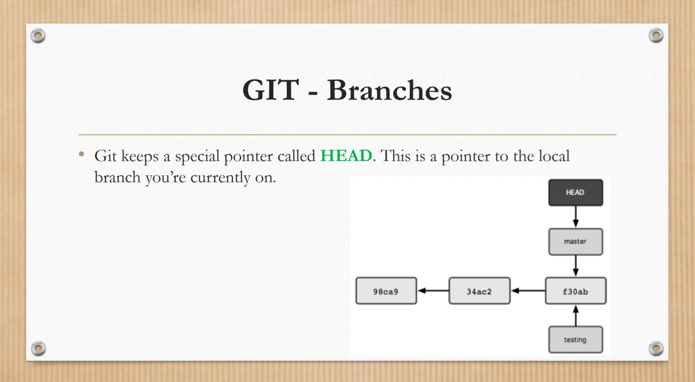
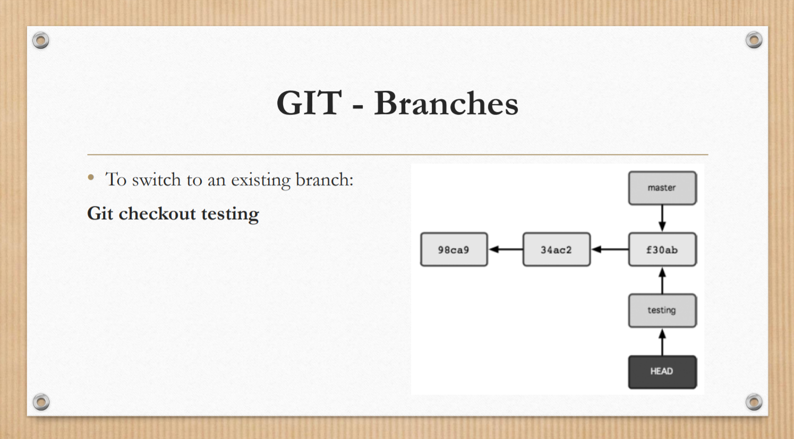
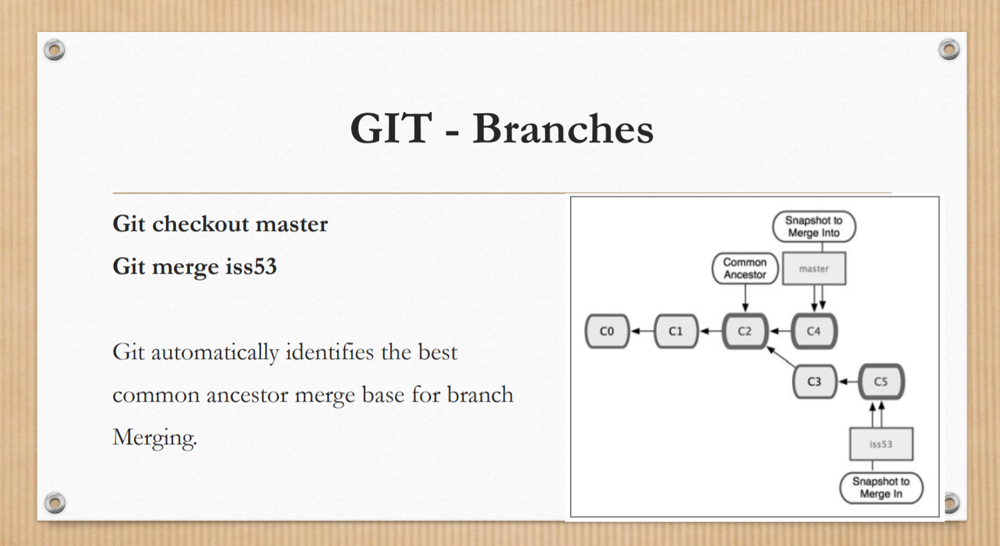
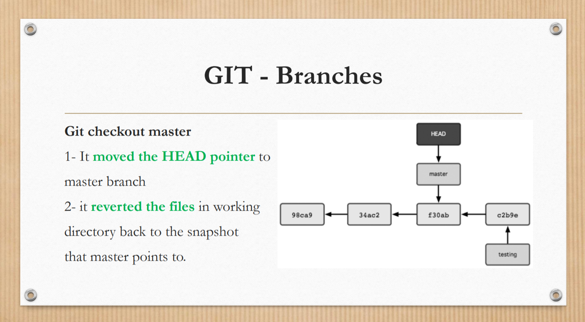

مفهموم HEAD
گیت یک نشانه گر یا پوینتر خاص به نام Head نگه می دارد . این نشانگر به شاخه ی محلی فعلی که روی آن کار می کنید اشاره می کند
درواقع HEAD به آخرین commit در شعبه پرداخت فعلی اشاره می کند. این مانند یک اشاره به هر مرجعی است. HEAD را می توان به عنوان "شاخه فعلی" درک کرد. وقتی شعبهها را با «پرداخت» عوض میکنید، HEAD به شعبه جدید منتقل میشود.
تعویض برنچ
هنگام کار در مخزن محلی خود، ممکن است بخواهید به جای خط کد اصلی، کد شعبه را بررسی کرده و روی آن کار کنید. درست مانند خط کد اصلی، وقتی کد شاخه را به Bitbucket Cloud پوش می کنید، آن شاخه را برای شما ردیابی می کند. برای مشاهده اینکه شما یا سایرین در فضای کاری خود کدام شاخه ها را پوش کرده اید، به فهرست شاخه ها در مخزن خود مراجعه کنید.
ادغام شاخه ها
ادغام روشی است که Git merge برای گردآوری مجدد یک تاریخچه دوشاخهای دوباره به هم میرساند. دستور git به شما امکان می دهد خطوط توسعه مستقل ایجاد شده توسط git branch را بگیرید و آنها را در یک شاخه واحد ادغام کنید. توجه داشته باشید که تمام دستورات ارائه شده در زیر در شاخه فعلی ادغام می شوند. شاخه فعلی بهروزرسانی میشود تا ادغام را منعکس کند، اما شاخه هدف کاملاً بیتأثیر خواهد بود. باز هم، این بدان معنی است که ادغام git اغلب همراه با git checkout برای انتخاب شاخه فعلی و git branch -d برای حذف شاخه هدف منسوخ استفاده می شود.
ریورت
دستور git revert را می توان یک دستور از نوع 'undo' در نظر گرفت، با این حال، این یک عملیات undo سنتی نیست. به جای حذف commit از تاریخچه پروژه، نحوه معکوس کردن تغییرات ایجاد شده توسط commit را مشخص می کند و یک commit جدید با محتوای معکوس حاصله اضافه می کند. این مانع از دست دادن تاریخچه Git می شود که برای یکپارچگی تاریخچه بازبینی شما و همکاری قابل اعتماد مهم است.
